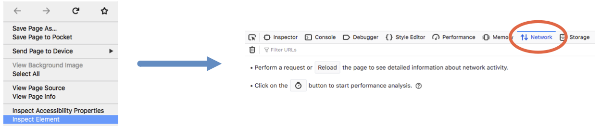
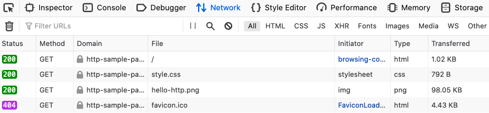
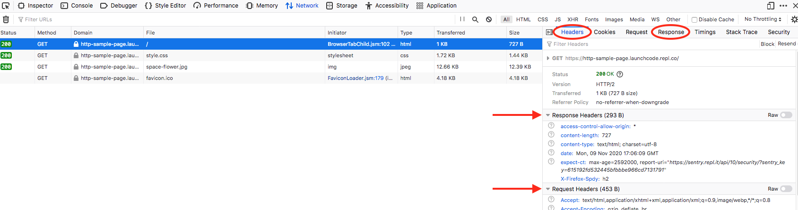

19.6. Exercises: HTTP In The Browser¶
While we looked at the HTTP concepts we need to know, we haven’t actually seen what they look like in real time. Requests and responses take place behind the scenes. To to view them, we need to open up a new browser tool.
19.6.1. Viewing Requests and Responses¶
Let’s start with a simple webpage similar to one of the CSS examples. The code for the page is in the editor below.
{kind=link}
For these examples, you will need to open a couple of new tabs. Click the Open in replit button to enter the Replit workspace. Next, Fork a copy of the code to your own account. Finally, in the upper right corder of the output panel, click the Open in a new tab icon.
In the new tab (titled HTTP in the browser), you should see the sample
webpage. Now let’s take a look at the requests and responses that occur when
the browser displays the page.
19.6.1.1. Try It!¶
Note
The images below were taken from Firefox. Other browsers will show similar results, but slight differences should be expected.
Make sure you are in the HTTP in the browser tab, then do the following:
Open your browser’s developer tools and select the Network tab.
Method 1: Firefox has a Tools menu. Select Web Developer and Network from the options.
Method 2: Right click inside the page and select Inspect Element. In the panel that opens, click the Network tab.

The Network pane displays all the HTTP requests and responses that occur when loading a page. However, it only works if it is open during the request. To see some data appear in this panel, refresh the page.
Now you’ll see something like this:
The Network panel, showing four requests/responses.¶
Each entry gives information about a single HTTP request. The entries appear in the order in which the requests are made as the page loads.
Note the response codes that appear on the left side of each entry. Hover over one of these to see some status information about the request.
Click on one of the
200entries. This opens up more details about the request and the response.On the right, we can find the response headers and (scrolling down) the request headers. We can even view the response body by clicking on the Response label.
In the HTML code, change the
<link>element in line 7 to:<link href="rutabaga.css" rel="stylesheet" type="text/css" />
Reload the page. What happens to the styling? Check the Network panel again. Notice that a new
404error appears in the list. The browser requested therutabaga.cssfile from the server, but no matching title is stored there. With no external CSS found, the HTML page keeps the default style properties.Fix the name mismatch for the style sheet, then create a new mismatch with the image name. What happens to the appearance of the webpage and the results shown in the Network panel?
{kind=link}
19.6.2. Browser Flow¶
Looking in the Network pane, we see that loading this simple web page involves more than one HTTP request. Each resource within the page (like the image and CSS file) requires a separate request.
Let’s examine the flow of loading this page, which used a GET request.
- The browser requests the page from the server.
- The browser receives a response containing the HTML page.
- The browser issues a new HTTP request for the external CSS file.
- Similarly, a separate HTTP request is made for the
hello-http.pngimage. - As each new response is received, the browser processes the data or media and updates the page. In this case, it executes the HTML code before requesting and applying the CSS. Finally, it requests and then displays the image.
This flow explains why we sometimes load a webpage and see the content update over a few seconds (or longer). In these cases, the HTTP requests for larger data files (like high-resolution images) take more time to complete. This produces a noticeable lag in the time it takes the browser to display the complete page.
Imagine we slowed the loading process way down for the sample webpage. We would
first see the text from the plain HTML elements. Next, we would see
when the CSS rules finish loading, because we would notice the text and
background styles change. Finally, we would see the image fill into the middle
of the figure element.
19.6.3. Try Other Webpages¶
The sample webpage only needed four HTTP requests. Now open a new tab in your browser and navigate to a page that includes more content. This can include images, videos, buttons, links, areas that respond to your actions, etc.
Open the Network tab and see just how many requests/responses are necessary to make your chosen webpage work.
Tip
Stuck choosing a good website? Try one of these options:
- How many requests were required to load the page?
- Try finding a
POSTrequest, then check what’s in the request body and the response body. - Try finding a
401or403error. What does the code mean? - Do you see any request types besides
GETorPOST? (These are possible, but you might not see them for all pages).
19.6.4. Check Your Understanding¶
Return to the HTTP in the browser tab. Open the Network panel and find
the request for the image. Use the information there to answer the following
questions.
Question
What is the approximate size of the image?
- 98 kB
- 200 kB
- 404 kB
- Unknown
Question
Check the Request and Response tabs. What are the dimensions for the image?
- 200 x 200
- 800 x 600
- 1248 x 266
- 1440 x 900